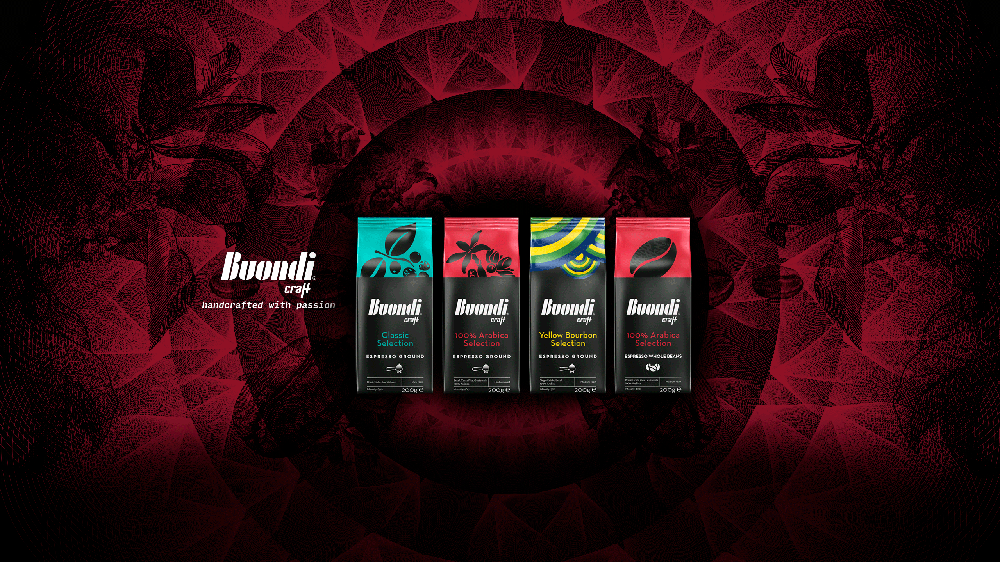

Buondi Craft Espresso Ground 100% Arabica

Όπως δηλώνει και το όνομά του, αποτελείται εξ ολοκλήρου από αλεσμένους κόκκους 100% Arabica. Διακρίνεται για το ισορροπημένο σώμα του με αρώματα από σοκολάτα γάλακτος, καρύδια, σταφίδες και νότες πράσινου μήλου. Έχει ήπια οξύτητα και αφήνει μία γλυκιά επίγευση.